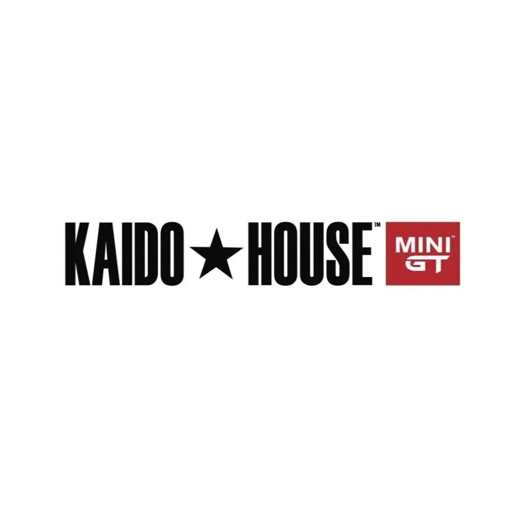

Created by an automotive designer
Kaido House was created by Jun Imai, a designer known in the die-cast world for his work on car designs and his interest in Japanese automotive culture.
DIECAST DISTRICT / BRAND ENCYCLOPEDIA 07

Bold custom builds, Japanese street-car inspiration and distinctive 1:64 miniatures created by designer Jun Imai in collaboration with MINI GT.
START HERE
Kaido House is an automotive design and lifestyle brand created by designer Jun Imai. Its die-cast releases are especially known for bold custom interpretations of cars, with styling inspired by Japanese street-car and kaido-racer culture.
The familiar Kaido House miniature line is made in collaboration with MINI GT. The models combine Jun Imai's creative direction and custom designs with MINI GT's 1:64 die-cast production. Packaging commonly carries both Kaido House and MINI GT branding.
Kaido House is broader than die-cast cars: its official brand world also includes real-car projects, artwork, apparel, accessories and events. This independent guide focuses on the miniature collecting side.
QUICK NAVIGATION
THE STORY
Kaido House was created by Jun Imai, a designer known in the die-cast world for his work on car designs and his interest in Japanese automotive culture.
Kaido House and MINI GT announced a collaboration to develop a special line of model cars. The partnership brings Kaido House designs to MINI GT's 1:64 model range.
The Kaido House x MINI GT collaboration developed into a recognisable collector line, with custom-styled vehicles and its own release identity.
Kaido House established its flagship garage and art studio in Venice, California. The space supports the brand's creative work, car culture and events; it is not a normal public walk-in shop.
The brand continues to connect die-cast collecting with custom car projects, art, apparel and collaborations. New model releases and projects are announced over time.
Kaido House is not simply another name for MINI GT. It is a distinct design brand whose die-cast line is produced in collaboration with MINI GT.
WHAT MAKES IT DIFFERENT?
The models carry a recognisable custom style shaped by Jun Imai's creative direction and interest in Japanese car culture.
Many designs feature exaggerated bodywork, lowered stances, wide fenders and expressive graphics inspired by custom street-car scenes.
The die-cast line is made with MINI GT. The packaging and product identity commonly show the partnership between the two brands.
Paint schemes, names and version labels give individual models a distinctive identity, rather than presenting every release as a plain factory-stock car.
MINI GT is known for a broad range of miniature replicas of real production and race cars. Kaido House x MINI GT focuses on Jun Imai's custom design universe. They are connected, but they are not interchangeable names for the same line.
THE LOOK
Some models feature widened fenders and bodywork that give the miniature a more aggressive custom stance.
The ride height and wheel fitment are often part of the design identity. The exact look depends on the model.
Wheel design, colour and fitment contribute strongly to each build's personality.
Graphics, racing-inspired markings and contrasting colours help distinguish one release from another.
Many Kaido House releases are known for an opening bonnet that reveals an engine detail. Always check the specific model listing because features can vary.
Packaging is part of the presentation. The window box and artwork help identify the model and are worth keeping if you collect boxed examples.
Not every Kaido House casting has every feature listed here. Treat the individual product photos and official description as the reference for that release.
EXPLORE THE MINIATURE GARAGE
Kaido House releases span a mix of Japanese classics and other vehicles reimagined in the brand's custom style. These are subject categories, not a promise that every casting is currently available.
The Datsun 510 is one of the best-known platforms in the Kaido House story, appearing in multiple custom looks and release versions.
Different Skyline generations have been reimagined with Kaido House styling, custom details and distinctive graphics.
Japanese sports coupes and Z-car subjects fit naturally into the brand's street-car design language.
Selected Honda models have appeared in the collaboration, showing how the Kaido treatment can be applied beyond Nissan vehicles.
Kaido House has also brought its styling to vehicles such as BMW models, showing that the line is not limited to Japanese cars.
Volkswagen vans and American pickup subjects have appeared in the wider Kaido House catalogue with custom themes and finishes.
Selected releases connect Kaido House with other brands, designers or automotive projects. Read the individual release story to understand the partnership.
The brand also features real vehicle projects that inspire its creative world. These are full-size projects, separate from the miniature die-cast releases.
SIZE & CONSTRUCTION
Kaido House x MINI GT models are primarily 1:64 scale. At exact 1:64 scale, one unit on the model represents 64 of the same units on the real vehicle.
For example, a real car that is 4,480 mm long would measure 70 mm at exact 1:64 scale. Actual model dimensions can vary depending on the vehicle and whether the miniature is produced to exact scale.
Collectors often appreciate the combination of compact size and visible design details. Specific construction and features should be checked on each product listing.
Real vehicle length ÷ 64 = model length at exact 1:64 scale. Example: 4,480 mm ÷ 64 = 70 mm. Use the individual product specifications for exact dimensions.
IDENTIFY YOUR RELEASE
Kaido House x MINI GT releases use product identifiers that commonly begin with KHMG. Use the full code printed on the packaging to identify a specific release.
A version label commonly distinguishes a particular design or release treatment of a casting. Compare the full product name and photos rather than assuming versions are identical.
Different versions may use different colours, graphics or custom themes. These differences are part of the release identity.
Some releases may have special chase variants. Availability and identification are release-specific; do not assume every model has one or rely on a seller's claim without evidence.
Always record the complete product code, model name and version. A casting name by itself may not identify the exact release you own or want to buy.
START YOUR COLLECTION
Start with a vehicle you already like, such as a Datsun, Skyline, Silvia, Honda or another model in the line.
Read the full model name and KHMG code. Make sure the version and livery match the one you want.
Look at the body kit, wheels, paint, graphics, opening features and packaging for the exact release.
Prices can vary with availability and demand. Decide your spending limit before shopping and avoid pressure to buy immediately.
If boxed presentation matters to you, store the window box and card safely and keep them with the correct model.
Record the KHMG code, casting, version, purchase date and price. Photograph the model and packaging for reference.
MAKE IT YOURS
Choose the custom builds that match your taste and give every release a place in your collection.
Add cars to My Garage ↗BUY SMART
Match the KHMG identifier and full model name with official product information or a trusted retailer listing.
Look for clear photos of the model, window box, card and any damage. Ask whether the model has been opened or displayed.
Ask for clear evidence and understand the exact release. A high asking price or seller description alone does not prove a chase variant.
Compare reputable sellers and completed sales where possible. Availability and asking prices can change quickly.
This guide cannot authenticate an individual model. If something seems uncertain, request additional photos and compare the item with official product information or a trusted specialist retailer.
KEEP YOUR MODELS LOOKING GOOD
Long exposure to direct sunlight can affect paint and packaging. Choose a display location away from strong light.
Keep the window box dry and away from crushing pressure. Avoid placing heavy objects on top.
If the model has an opening bonnet or other feature, do not force it. Follow the design of the individual casting.
Keep models on a level shelf or in a display case where they cannot easily fall or be knocked over.
QUICK ANSWERS
Kaido House was created by automotive designer Jun Imai, who is also identified by the brand as its President and Chief Creative Officer.
Kaido House is a separate design and lifestyle brand. Its die-cast model line is made in collaboration with MINI GT, which is why both names appear together on the products.
The Kaido House x MINI GT die-cast line is primarily 1:64 scale. Check the individual product listing for its specifications.
KHMG is part of the product identifier used on Kaido House x MINI GT releases. Record the full code printed on the box to identify the exact model.
Version labels distinguish different releases or treatments of a model. Compare the full product name, code and photos to identify the exact version.
Many releases are known for opening bonnet features, but you should check the specifications of the exact model rather than assume every release is identical.
Availability and collector demand vary by release. A special label or high asking price does not by itself establish rarity or value.
KEEP LEARNING
Diecast District is an independent collector project and is not affiliated with or endorsed by Kaido House, Jun Imai, MINI GT or TSM Model. Brand names and trademarks belong to their respective owners. Product features, release details and availability can change; verify individual models using official product information.